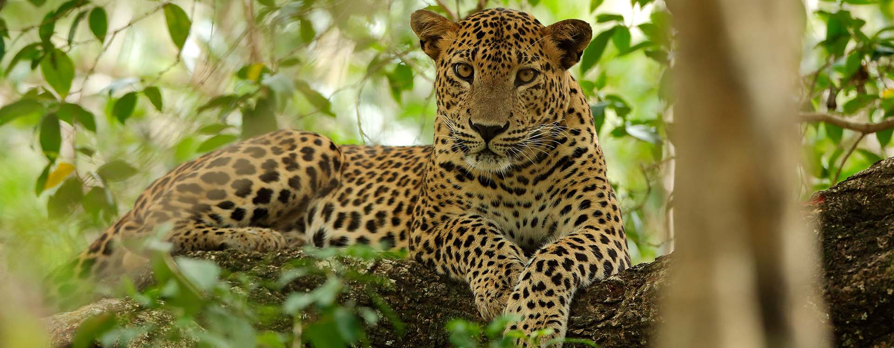

1 / 6

2 / 6

3 / 6

4 / 6

5 / 6

6 / 6

Wilpattu
Wilpattu National Park (Willu-pattu, "Land of Lakes") is a national park in Sri Lanka. The unique feature of this park is the existence of "Willus" (natural lakes) – natural, sand-rimmed water basins or depressions that fill with rainwater.
'>
Meemure
Meemure is a village with a population of about 420 people living in it It is located near the border between Kandy District and Matale District in the Knuckles Mountain Range. Meemure is one of the most remote villages in Sri Lanka with the only access via a 14 km trail from the town of Loolwatte.
'>